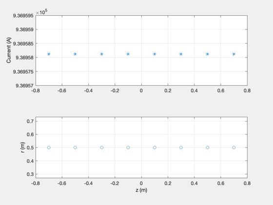
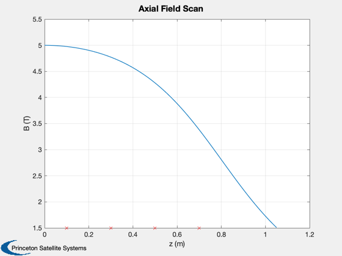
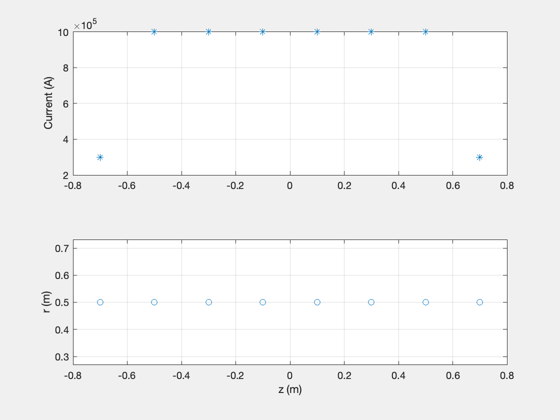
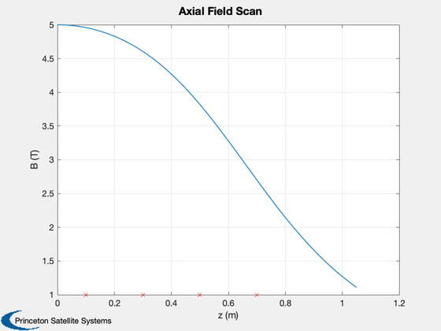
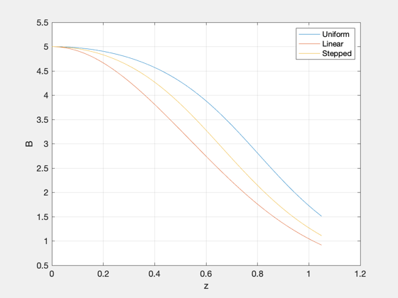
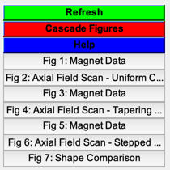

Contents
Compare current profiles for PFRC magnets
Three current shapes are compared for fixed magnet radii.
See also: SolveSolenoid, FLinearCurrent, FSteppedCurrent
%-------------------------------------------------------------------------- % Copyright (c) 2019 Princeton Satellite Systems, Inc. % All rights reserved. %--------------------------------------------------------------------------
Magnet geometry
as = [0.5 0.5 0.5 0.5]; zs = [10 30 50 70]*1e-2; % Target leak field B0 = 5; % T
Default shape is uniform current
[iC,iCs] = SolveSolenoid( as, zs, B0 ); ScanMagnetArray(as,iCs,zs); [Bs,xs] = ScanMagnetArray(as,iCs,zs); set(gcf,'Name','Axial Field Scan - Uniform Current') 
Linearly tapering current
Imin = 0.2; [iC2,iC2s] = SolveSolenoid( as, zs, B0, @(x) FLinearCurrent(x, Imin) ); ScanMagnetArray(as,iC2s,zs); [Bs2,xs2] = ScanMagnetArray(as,iC2s,zs); set(gcf,'Name','Axial Field Scan - Tapering Current')

Stepped current
Iend = 0.3; [iC3,iC3s] = SolveSolenoid( as, zs, B0, @(x) FSteppedCurrent(x, Iend) ); ScanMagnetArray(as,iC3s,zs); [Bs3,xs3] = ScanMagnetArray(as,iC3s,zs); set(gcf,'Name','Axial Field Scan - Stepped Current') 
Summary
fprintf('\nUniform Current: %g A\n',iC) fprintf('Maximum Linear Current: %g A\n',iC2) fprintf('Minimum Linear Current: %g A\n',min(iC2s)) fprintf('Maximum Stepped Current: %g A\n',iC3) NewFig('Shape Comparison') plot(xs,Bs); hold on; plot(xs2,Bs2); plot(xs3,Bs3); xlabel('z'); ylabel('B') grid on legend('Uniform','Linear','Stepped') Figui; %--------------------------------------
Uniform Current: 936958 A Maximum Linear Current: 1.23606e+06 A Minimum Linear Current: 247211 A Maximum Stepped Current: 1.00181e+06 A 